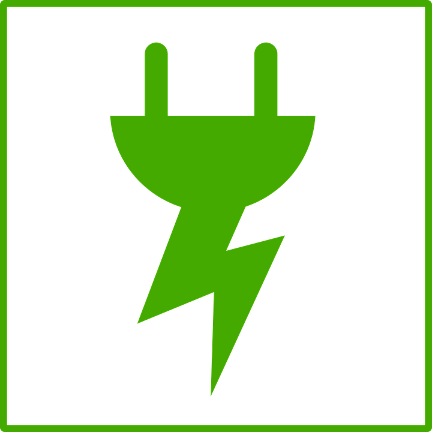

Our houses include many features to help keep costs done and lessen their environmental impact
Energy star certified appliances.
Solar panels help to power the house.
Smart home features for monitoring and controlling energy usage,
Double pane windows help decrease heating bleed.
Sealed windows and doors keep tempature consistent.
programmable thermostat that can be programmed to only heat or cool when you are home.
Insulated heating ducts make sure that minimal heat escapes before it gets to the outlets.
Low flow shower and sink heads help to drop water usage.
Low water usage toilets
Low water usage dish washers